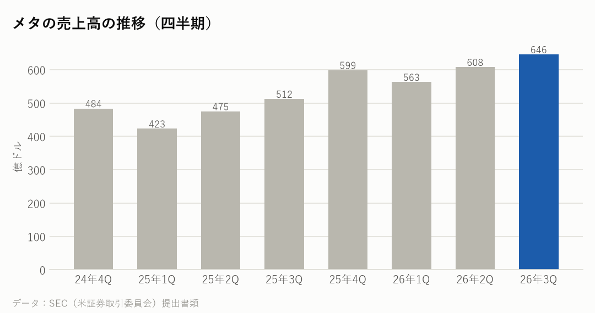
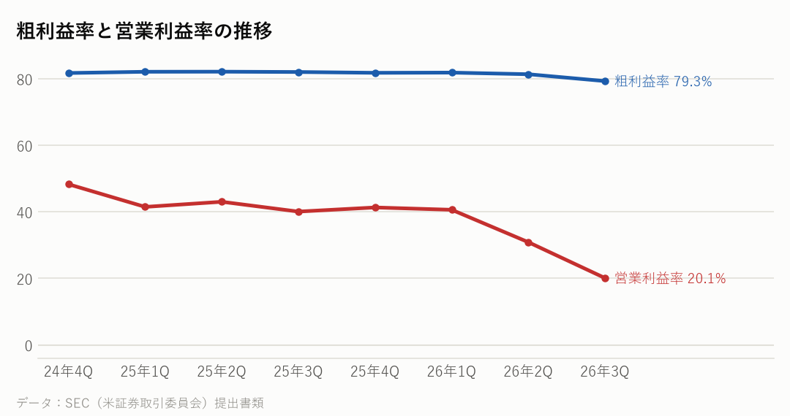
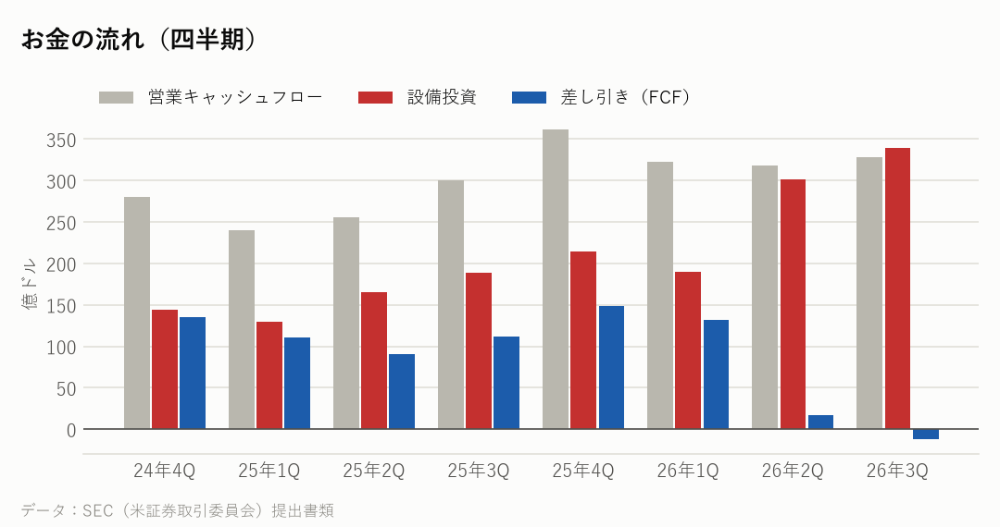
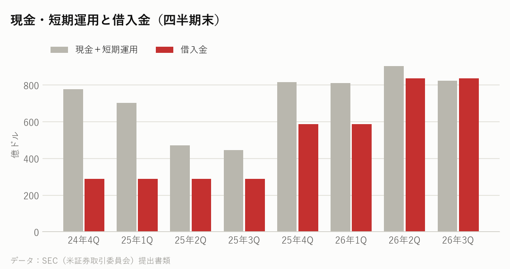

META｜2026年7〜9月期の決算｜決算発表 2026年10月21日
メタの決算：売上26%増、訴訟の費用で営業利益は37%減
7〜9月期の売上高は前年同期比26%増の646億ドルだった。一方、10代の心の健康をめぐる訴訟の和解で約99億ドルの費用を計上し、営業利益は37%減の130億ドル、営業利益率は20%に下がった。10〜12月期の売上高は730億〜760億ドルの見通しを示した。
主な数字（2026年7〜9月期）
| 今回 | 前年同期 | 前年比 | |
|---|---|---|---|
| 売上高 | 646億ドル | 512億ドル | +26.1% |
| 粗利益率 | 79.3% | 82.0% | |
| 営業利益率 | 20.1% | 40.1% | |
| 純利益 | 99億ドル | 27億ドル | |
| 1株利益（希薄化後） | 3.83ドル | 1.05ドル |
部門ごとの売上
| 部門 | 売上 | 前年比 |
|---|---|---|
| アプリ（Facebookなど） | 642億ドル | +26.0% |
| Reality Labs（VR・AR） | 4億ドル | -6.0% |

会社の見通し
| 売上高（10〜12月期） | 730億〜760億ドル |
|---|---|
| 2026年の設備投資 | 1,350億〜1,450億ドル |
| 2026年の費用 | 1,750億〜1,790億ドル |
| Reality Labs の赤字 | 180億〜190億ドル |
- 見通しの売上高は730億〜760億ドルで、今回の646億ドルから13〜18%増える計算になる。為替の影響は約1%のマイナスを見込む。
- 2026年の設備投資は1,350億〜1,450億ドルの計画で、前の1,300億〜1,450億ドルから幅を狭めた。2027年も本業とAIへの投資を積極的に続けるとしている。
- Reality Labs の赤字は、2026年が180億〜190億ドル、2027年は約150億ドルに縮む見込み。
もうけの力

お金の状況


投資している分（出資の評価額）
| 未上場株などへの出資（帳簿上の価値） | 211億ドル |
|---|---|
| 上場株への出資（時価） | 31億ドル |
| 合計 | 242億ドル |
- 未上場の会社などへの出資は、帳簿上で約211億ドル。主な出資先には、2025年に株の49%を取得した AI のデータ会社 Scale AI がある。決算発表には、個別の出資先の説明はない。
- 新しく議決権のない「C種株」をつくり、2027年1月19日から、今の株主に1株につき1株を配ると発表した。議決権の割合は変わらない。
大手のネット・クラウドの会社と比べると
各社の直近の四半期。在庫の日数は「在庫が売上原価の何日分か」。
| 会社 | 決算期末 | 売上高 | 前年比 | 粗利益率 | 営業利益率 | 設備投資/売上 | 在庫の日数 |
|---|---|---|---|---|---|---|---|
| メタ | 2026-09 | 646億ドル | +26.1% | 79.3% | 20.1% | 52.5% | ― |
| アルファベット | 2026-09 | 1,276億ドル | +24.7% | 59.7% | 31.8% | 40.3% | 24日 |
| マイクロソフト | 2026-09 | 923億ドル | +18.8% | 67.8% | 49.8% | 42.7% | 6日 |
| アマゾン | 2026-09 | 2,019億ドル | +12.1% | 53.2% | 13.9% | 38.3% | 41日 |
| オラクル | 2026-08 | 193億ドル | +29.6% | ― | 34.8% | 147.3% | ― |
NasdaqWhy の視点：データから読み取れる注目点
決算資料と各社の公式データを並べて読み取れることです。将来を予想するものではありません。
- 訴訟の費用を除くと、営業利益は229億ドル、1株利益は7.40ドルになる（決算発表より）。和解の支払いは最大で約186億ドルで、いつ現金が出ていくかは今後の注目点だ。
- 設備投資（リースを含む）は349億ドルで、差し引きのお金（FCF）は21億ドルのマイナスになった。1〜9月に長期の借入れで249億ドルを集め、11月にも社債を出している（SEC への提出書類より）。手元の現金と短期運用は825億ドル。
- メタはAIの計算機を大量に買う側だ。設備投資の多くはデータセンターとサーバーで、エヌビディア（売上 約2.1倍）、ブロードコム（+86%）、AMD（データセンター部門 +97%）の売上の伸びとつながっている。AMDは決算で、メタがAMDのラック型のAIシステムで動かし始めたと説明している。
- 広告の表示回数は10%増、1回あたりの値段は14%増と、どちらも伸びた。社員は約6.7万人で、前年同期より15%少ない。
- 純利益は前年同期の約3.6倍だが、前年同期に一時的な税金の費用があったためで、本業の伸びをそのまま表すものではない。
次に確認したい決算・予定
- エヌビディアの決算（11月下旬の見込み）：メタなど大手の買う側の投資が、売る側の売上にどう出ているか。
- メタの次の決算（2027年1月下旬の見込み）：730億〜760億ドルの見通しどおりか、設備投資が計画の範囲に収まったか。
- C種株の配布（2027年1月19日から）と、その後に予定する株の分割。
関連リンク
出典：メタ 決算発表（2026年10月21日）・四半期報告書（10-Q）、各社の SEC 提出書類
※情報提供のみ。投資判断はご自身でお願いします。※個人運営で、Nasdaq, Inc.とは無関係です。